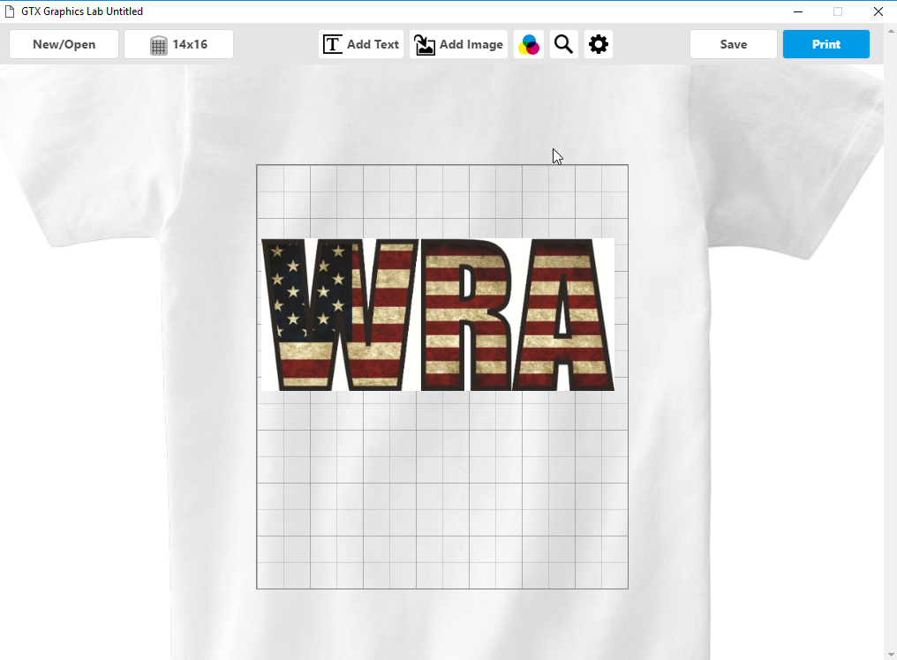
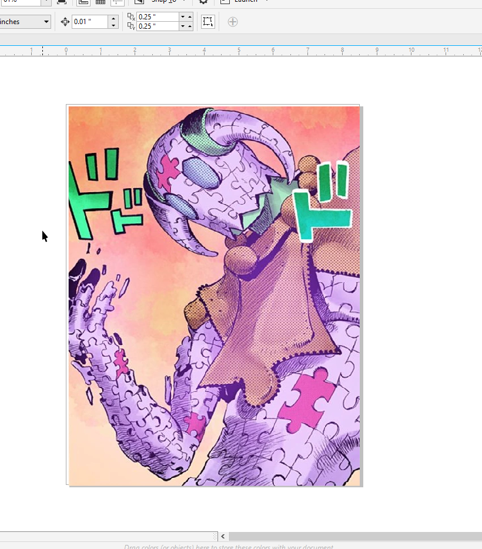

This week we were introduced to the UV printer, Sawgrass 800 printer and the shirt press. We learned how to use them and were asked to create example projects using each.
Since we were already given the directions to involve WRA & USA I decided to combine the flag into the WRA logo. I got inspired by similar designs I've seen on shirts. To make the text I powerclipped and image of the US flag onto the WRA text
Shirt Files 
The Woodhouse Mafia never forgets. To make the sticker I photoshopped Mr.Gerber's face onto a picture of Kirby and changed the colour to pink. I then took an image of "Kirby Super Star" and photoshopped the letters to make it look like it says "Gerby Super Star." I then followed the instructions online to make it a printable file to heat press onto the mug.
The Sawgrass 800 printer that I used to make this (printed out mug sticker then heat pressed onto mug) uses dye sublimation meaning "A dye-sublimation printer is a computer printer which uses heat to transfer dye onto materials such as a plastic, card, paper, or fabric." Dye sublimation holds advantages such as being much easier to use when handing fabrics and other softer materials, as it creates no extra layers or texture.


I read a book series that has a lot of creative battles & abilities called JoJo's Bizarre Adventure. I remembered one ability had a puzzle design so I incorporated it into an actual puzzle. In order to print it I simply pasted the image onto the blank template file and adjusted the printed machine accordingly and hit print.
Puzzle Files 